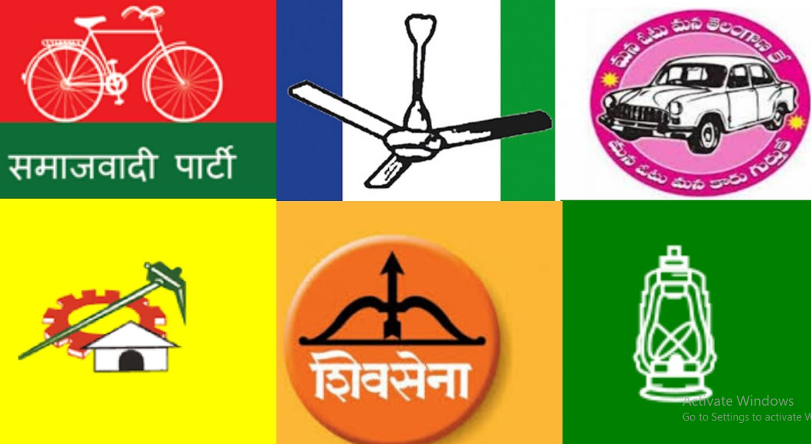
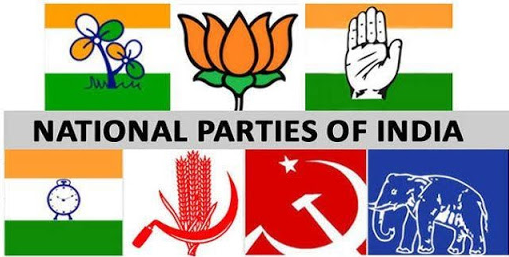

A political party basically, is a group of people. These people come together to contest elections in order to hold power in the government. It is a way to mobilize voters to support common sets of interests, concerns, and goals.
Functions of a Political Party
Parties contest elections and after wining they run governments.
Parties put forward different policies and programmes and the voters choose from them. A party reduces a vast number of opinions into a few basic positions which it supports.
Parties play a decisive role in making laws for a country.
Those parties that lose in the elections play the role of opposition to the parties in power.
Election Commission

Every party in India has to register with the Election Commission.
The Commission treats every party as equal to the others, but it offers special facilities to large and established parties.
They are given a unique symbol and are called, “recognised political parties.
National Parties & State Parties

National Party:
A party that secures at least six percent of the total votes in Lok Sabha elections or Assembly elections in four States and wins at least four seats in the Lok Sabha is recognised as a national party.
State Party:
A party that secures at least six percent of the total votes in an election to the Legislative Assembly of a State and wins at least two seats is recognised as a State party.
Importance of Political Parties
A democracy cannot exist without the presence of a political party.
Every candidate in the election would be an independent candidate. Any individual candidate does not have the efficiency to promise any major policy change to the people.
In the long run, only a representative democracy can survive. Political parties are the agencies that gather different views on various issues and present them to the government.